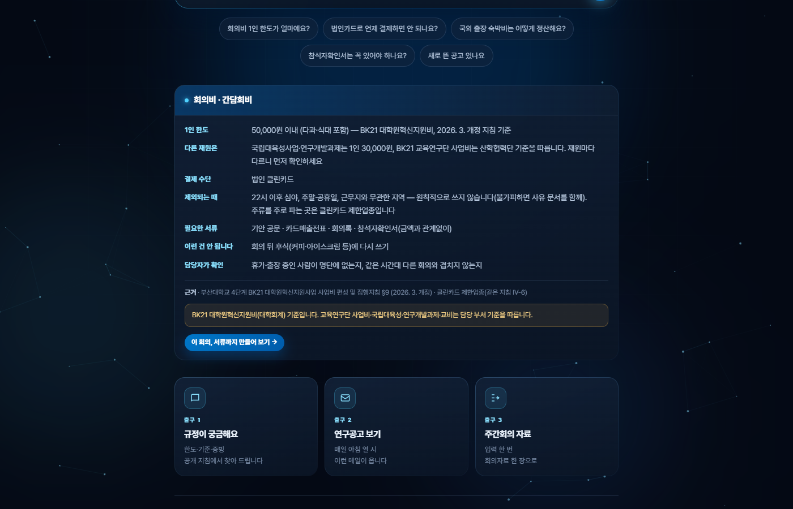
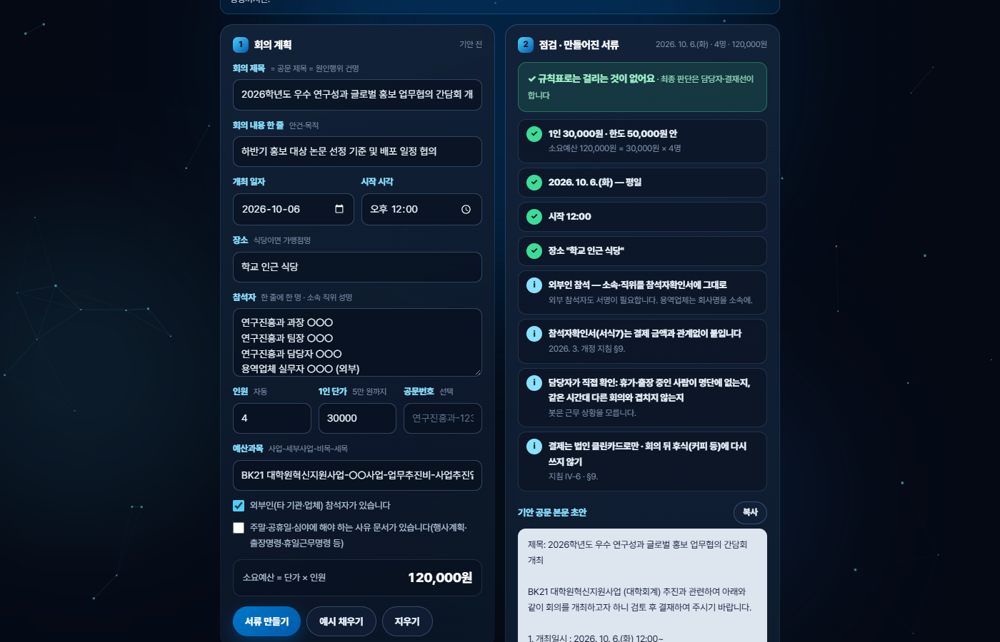
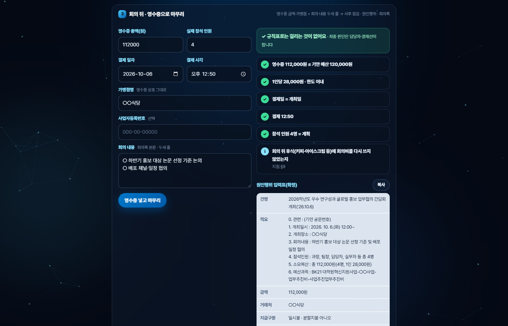
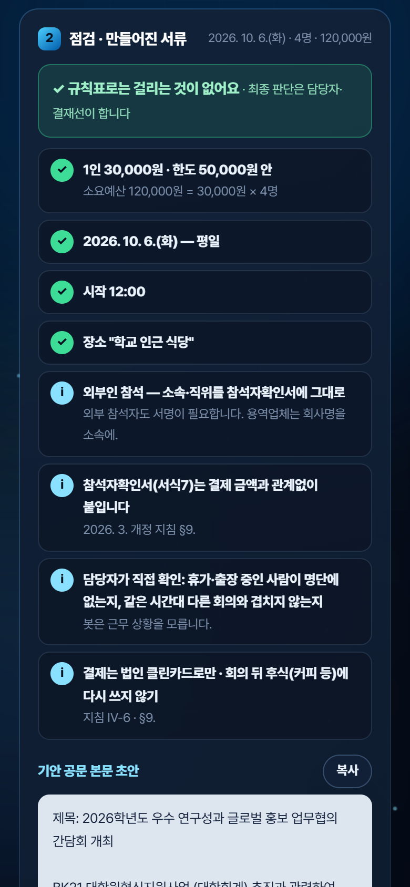

내 에이전트에서 「(기능 이름)」 한 가지만 확실하게 다듬고 싶어. 1) 이 기능이 기대는 숫자·규칙을 (근거 자료 파일 이름)의 현행본과 한 줄씩 대조해서, 다른 곳을 표로 먼저 보여 줘. 고치기 전에 나에게 확인받아. 2) 고치기 전에 검사를 먼저 써 줘: 한도 바로 위·아래 값, 주말·공휴일, 아침 9시 전 날짜, 빈 칸, 개인정보가 섞인 입력. 3) 예시 버튼은 오늘이 며칠이든 늘 통과하는 값으로 채우게 해 줘. 4) 검사가 전부 통과하면, 처음 쓰는 사람처럼 처음부터 끝까지 한 번 눌러 보고 막히는 곳을 알려 줘. 적은 내용은 서버로 보내지 말고, 고친 이유는 README에 한 줄씩 남겨 줘.
6주차 창구의 예시 질문 다섯 가운데 셋이 회의비·참석자확인서·법인카드였습니다. 회의비는 기안 공문 → 클린카드 결제 → 증빙 네 가지(공문·카드매출전표·회의록·참석자확인서) → 원인행위까지 손이 가장 많이 가는 일이라, 하나를 고른다면 이것이었습니다. 미션 지침도 "전체를 완성하려 하지 말고 잘 동작하는 한 부분이라도 확실하게"였습니다. 그래서 새 기능을 늘리지 않고 회의비 한 가지가 처음부터 끝까지 맞게 되는지만 봤습니다.
창구는 회의비 한도를 답하고, 서류를 만드는 화면은 별도 판(첫 판)에 있었습니다. 그 판의 한도는 2021 제정본 1인 3만 원이었습니다.
답 카드 아래 「이 회의, 서류까지 만들어 보기」 → 계획 점검 → 공문 본문·원인행위 입력표 → 회의 뒤 영수증으로 회의록·지출증빙 문구.
지침 PDF(부산대학교 4단계 BK21 대학원혁신지원사업 사업비 편성 및 집행지침, 2026. 3. 개정)를 쪽 단위로 다시 읽고, 창구가 말하는 것을 한 줄씩 맞대 봤습니다.
| 항목 | 고치기 전 | 고친 뒤 | 근거 |
|---|---|---|---|
| 1인 한도 | 1인 30,000원 (2021 제정본 값이 남아 있었음) | 50,000원 이내(다과·식대 포함) | §9 「지급기준: 5만원 이내/1인」(17쪽) |
| 어느 재원 기준인지 | 「BK21(대학회계) 기준」 | 「BK21 대학원혁신지원비」 · 국립대육성사업·연구개발과제는 1인 30,000원 · 교육연구단 사업비는 산학협력단 기준 | 재원마다 지침이 다름 |
| 참석자확인서 | "운용상 금액 무관" | "결제 금액과 관계없이" 필수 | §9 원문 |
| 근거 표시 | §9 · 예산 집행 체크리스트 §7 | §9 · Ⅳ-6(클린카드 제한업종) | 체크리스트는 2026. 3. 판에 없음(2021 판에만) |
| 휴가·출장자, 같은 시간대 | "안 됩니다"(조문처럼) | "담당자가 확인" | 지금 판 §9 조문에는 없는 운영 확인 사항 |
9/30에 지침 사본과 맞대 3만 원을 5만 원으로 고친 뒤, 10/1에 교육연구단 게시판에 공개된 같은 판과 옛 판(2022. 3.)까지 다시 대조해 확인했습니다. 서식(밑줄 등)만 보고 "이번 개정에서 바뀐 줄"이라고 짐작했던 것은 옛 판에도 같은 밑줄이 있어 틀린 짐작이었습니다 — 개정 여부는 옛 판과 맞대 본 것만 말하기로 했습니다.
| 점검(회의 전) | 어떻게 알려 주나 | 근거 |
|---|---|---|
| 1인 단가 | 50,000원을 넘으면 빨강 | §9 |
| 날짜 | 토·일·공휴일(대체공휴일 포함)이면 빨강 · 사유 문서 칸을 켜면 노랑 | §9 주의사항 |
| 시각 | 22시 이후 시작이면 빨강 · 20시 이후면 "결제가 22시를 넘지 않게" 노랑 | §9 주의사항 |
| 장소 | 근무지와 먼 지역 이름 · 주류 위주 업종으로 보이는 이름이면 노랑(이름만 보고 띄우는 알림) | §9 · Ⅳ-6 |
| 명단과 인원 | 수가 다르면 노랑 · 외부인은 참석자확인서 안내 | 증빙 |
| 늘 띄우는 것 | 참석자확인서는 금액과 관계없이 · 휴가·출장자·같은 시간대는 담당자 확인 · 회의 뒤 후식 금지 | §9 |
회의가 끝나면 영수증 총액·실제 인원·결제 일시·가맹점을 넣어 사후 점검(예산 초과, 1인당 한도, 결제일 = 개최일, 22시 이후)을 하고, 원인행위 입력표(확정)·서식6 회의록·서식1 지출 증빙 영수증 문구를 만들어 「복사」로 가져갑니다. 판정·결재는 하지 않습니다 — 점검은 규칙표에 따른 안내이고, 판단과 승인은 담당자와 결재선이 합니다.
| 걸린 것 | 왜 | 고친 뒤 |
|---|---|---|
| 「예시 채우기」를 10/8(목)에 누르면 빨강 「공휴일이에요」 | 예시 날짜를 '내일'로 넣었는데 10/9는 한글날 | 예시 날짜 = 다음 근무일(주말·공휴일 건너뜀) — 10/8이면 10/12(월) |
| 아침 9시 전에는 예시 날짜가 하루 밀림 | 오늘 날짜를 세계 표준시(UTC)로 셈 | 한국 시간으로 셈 |
| 빈 칸이 있어도 공문 본문이 나옴 | 막는 조건이 늘 거짓이었음(문구가 바뀐 뒤 조건을 안 고침) | 제목·날짜·인원·단가가 비면 점검만 보여 주고 서류는 내지 않음 |
| 예산과목에 부서 세부사업 이름 | 누구나 여는 화면에 내부 세부사업 이름이 보임 | 「○○」 예시와 직접 입력으로 |
위의 것을 하나씩 검사를 먼저 써서(빨강 확인) → 고친 뒤(초록) 올렸습니다. 운영판 34개 · 시연판 85개, 전부 통과해야 배포합니다.
// 이번 주에 새로 쓴 검사(일부)
✓ 1인 50,001원 → 빨강, 50,000원 → 통과(경계값), 옛 한도 30,000원을 넘는 40,000원도 통과
✓ 한도 줄에 「BK21 대학원혁신지원비」 · 교육연구단 사업비는 기준이 따로라는 안내
✓ 근거는 지금 판 지침에 실제로 있는 것만(「체크리스트」를 근거로 대지 않음)
✓ 다음 근무일: 10/8 → 10/12(한글날·주말 건너뜀) · 10/2 → 10/6(개천절·대체공휴일 건너뜀)
✓ 오늘 날짜는 PC 시간대와 상관없이 한국 시간(아침 8시 30분 → 그날)
✓ 예시를 채우면 그 자체로는 빨간 항목이 없다
✓ 서류를 만들면 plan, 마무리하면 after 를 한 번씩만 센다 — 적은 내용은 서버로 안 감
✓ 공개 화면에 부서 세부사업 이름이 없다
서버(Code.gs)가 세는 것은 질문(ask)·출구(exit)에 서류 만들기(plan)·마무리(after) 둘을 더한 고정 낱말 넷뿐입니다. 화면 코드와 검사는 Claude Code가 작성했고, 코드는 직접 쓰지 않았습니다.
| 항목 | 내용 |
|---|---|
| 배포 | 6주차와 같은 주소, @3(10/3) (Apps Script 웹 앱 새 버전 · 로그인 없이 열림) |
| 열어 본 곳 | PC 크롬 · 휴대폰 · 카톡 안 브라우저 — 로그인 없이 열리고 회의비 서류까지 됨(10/3 · 휴대폰·카톡은 화면 폭과 브라우저 흉내로 확인) |
| 사용 횟수 | 16회(질문·출구·서류 만들기·마무리를 센 합계) (익명 · 만든 사람의 시험 포함) |




| 구분 | 내용 |
|---|---|
| 된 것 | 회의비 한 가지: 현행 지침과 대조한 답 → 계획 점검 → 기안 공문 본문·원인행위 입력표 → 회의 뒤 사후 점검·회의록·지출 증빙 문구까지 한 화면. 날짜 계산 두 가지와 빈 칸 처리 고침. 새 검사를 먼저 쓰고 전부 통과. |
| 아직 안 된 것 | 다른 재원(국립대육성사업·교육연구단 사업비·연구개발과제·교비)의 서류 점검 — 지금은 답 카드에서 "기준이 다르다"고 알려 주는 데까지. 결재·KORUS 입력·잔액 확인·영수증 읽기는 하지 않습니다. 공휴일표는 담당자가 해마다 갱신해야 합니다. |
| 바꾸지 않을 원칙 | 적은 내용은 서버로 보내지 않고 저장하지 않는다. 숫자는 지침 원문과 맞대 본 것만, 근거와 판을 함께 적는다. 판정·승인은 사람. |
다음 계획: ① 8주차 — 이 창구를 다른 부서·대학 행정에 도입할 수 있는지 검토하고 확장 아이디어 정리(재원별 예외표가 첫 후보) ② 써 본 분 의견으로 예시·문구 다듬기 ③ 지침이 개정되면 규칙표 한 곳과 검사를 같이 고치기.